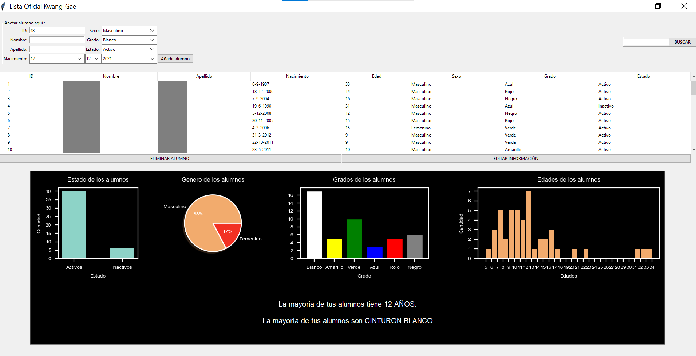

Lista de Alumnos
Creada para ayudar a los instructores de artes marciales, en este caso Taekwon-Do, esta interfaz gráfica desarrollada con la librería Tkinter de Python permite almacenar la información de los alumnos en una base de datos. A su vez muestra estadísticas en tiempo real para que el instructor pueda tener un mejor manejo de sus grupos y hacer crecer su alumnado.
Este proyecto se desarrolló con Python en su versión 3.8 junto con las librerías Tkinter, sqlite3, Pandas, datetime y Matplotlib. En la actualidad el programa es utilizado por la Escuela de Taekwon-Do I.T.F. Kwang-Gae para optimizar sus academias.